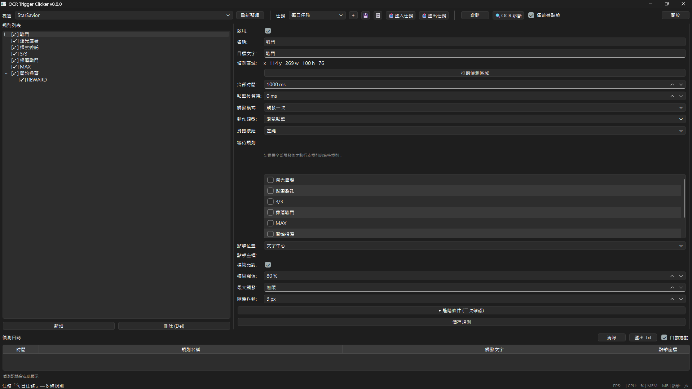
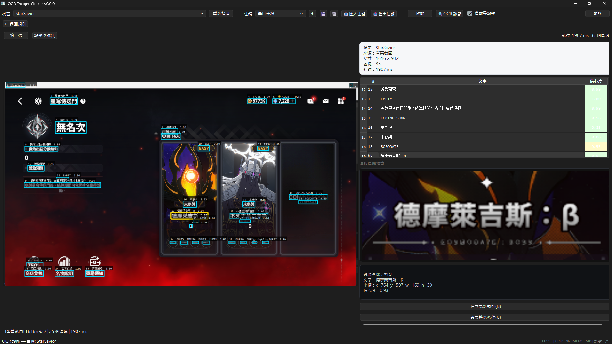
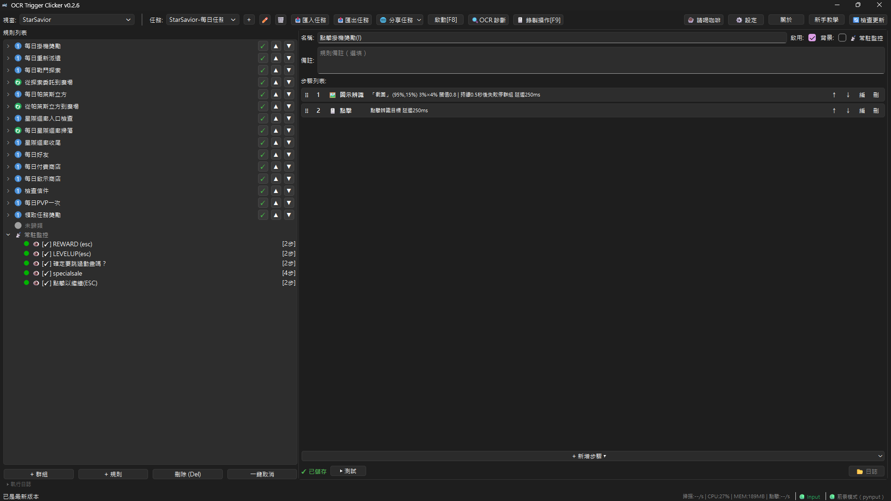

核心功能
- OCR 文字辨識 — 基於 RapidOCR 引擎，支援繁體中文與簡體中文。可指定 ROI（感興趣區域）精確比對，避免全螢幕干擾。
- 群組系統 — 規則依群組執行，支援循環執行／執行一次／重複 N 次，可獨立停用。
- Steps 步驟系統 — 每條規則由有序步驟組成：偵測（detect）、點擊（click）、按鍵（key）、等待（wait）、跳轉（jump）、數值比對（compare）、圖像比對（match_image）、滾輪（scroll）、拖曳（drag）。
- 常駐監控 — 不受群組流程影響，每幀獨立執行，適合錯誤攔截。
- 多任務管理 — 不同場景（不同遊戲、不同表單）可建立獨立任務，規則完全隔離，快速切換。
- OCR 即時診斷 — 即時顯示目前視窗內所有可辨識文字及其位置與信心度，大幅降低 ROI 設定難度。
- 可選前景保護 — 安全模式，開啟後只在目標視窗位於前景時才執行點擊，避免干擾其他操作。
- 系統托盤常駐 — 關閉視窗縮小至系統托盤背景執行，可透過設定調整關閉行為或啟用關閉確認。
- on_fail 通知 — 步驟失敗時可發送系統通知並自動停止指定群組。
- 規則匯入／匯出 — 任務可匯出為 JSON 檔，分享給他人或備份。
- 圖示模板比對（match_image） — 以圖找圖，支援多尺度搜尋與 NMS 篩選，適合無文字的按鈕或圖示辨識。
- 步驟層級失敗處理（on_fail） — 支援停止規則、按鍵、跳躍步驟、跳躍群組、系統通知等多種異常流程控制。
介面截圖



使用指引
快速入門
- 下載解壓縮：從 GitHub Releases 下載
ocr-trigger-clicker.zip，解壓縮後執行ocr-trigger-clicker.exe。 - 選目標視窗：在工具列選取你要操控的視窗（遊戲、ERP 系統、瀏覽器等）。
- 建立群組：右鍵 → 新增群組。預設是「執行一次」+「依序執行」，代表跑完一輪就停。
- 加規則：在群組內新增規則，第一步選「偵測（detect）」，輸入你要找的文字。
- 用 OCR 診斷確認：按「OCR 診斷」確認文字有沒有被偵測到，再決定要不要框 ROI。
- 加動作步驟：偵測後面加「點擊（click）」或「按鍵（key）」，設定你要觸發的動作。
- 測試：按「▶測試」確認規則是否正常觸發。OK 就按「啟動」開始跑。
進階技巧
- 縮小 ROI：偵測區域越小，OCR 速度越快。建議只框選包含目標文字的最小範圍。
- 加等待：在動作步驟之間加「等待（wait）」，讓畫面有時間變化，避免動作太快抓不到狀態。
- 用 jump 跳轉：在規則間跳轉（限同群組內），可實現條件分支流程。
- 用 compare 做數值判斷：對 ROI 內的數字做大於／小於／等於判斷，適合監控數值變化。
- 用 match_image 比對圖示：載入範本圖片後框選偵測 ROI，適合無文字的按鈕或圖示辨識。
- 善用常駐監控：勾選「常駐監控」讓規則每幀都跑，適合做錯誤攔截或緊急告警。
- 前景保護：開啟後只在目標視窗位於前景時才執行點擊，避免干擾其他操作。
工具教學
每個工具都有專屬功能，搭配使用能大幅降低設定難度。
OCR 診斷面板
即時顯示目標視窗中所有可辨識的文字、位置與信心度。
- 按主介面上的「OCR 診斷」按鈕。
- 面板開啟後，即時掃描目標視窗，列出所有辨識到的文字。
- 點選任一筆文字，可以看到它的位置（ROI）和信心度。
- 如果文字有被偵測到，直接按「建立為新規則」自動帶入文字和 ROI。
- 如果沒有偵測到，嘗試調整 ROI 區域或簡化文字內容。
ROI 框選
ROI（Region of Interest）就是你要偵測的畫面範圍。範圍越小，速度越快、準確度越高。
- 在偵測步驟中，按「框選偵測區域」按鈕。
- 主視窗會自動最小化，目標視窗跳到前景。
- 在目標視窗上拖曳滑鼠，框選你要偵測的區域。
- 放開滑鼠後自動回到主視窗，ROI 座標自動填入。
- 確認 ROI 位置正確，按「▶測試」驗證。
Click Picker（點擊座標選取）
選取你要點擊的精確位置。
- 在點擊步驟中，按「選取點擊座標」按鈕。
- 主視窗最小化，目標視窗跳到前景。
- 在目標視窗上單擊你要點擊的位置。
- 自動回到主視窗，座標自動填入。
- 可搭配「隨機偏移」避免被檢測為機器人。
match_image 圖像比對
以圖找圖，適合偵測無文字的按鈕或圖示。
- 在步驟中選擇「match_image（圖像比對）」。
- 按「選取範本圖片」載入你要比對的圖片（例如按鈕截圖）。
- 按「框選偵測區域」框選搜尋範圍。
- 調整「相似度門檻」：越高越嚴格，越低越寬鬆。建議從 0.7 開始調。
- （選擇性）勾選「比對顏色」：預設只比形狀（灰階），勾選後會額外比對顏色，可降低誤判但對光影變化較敏感，適合按鈕顏色是關鍵辨識特徵的情境。
- 按「測試比對」確認是否命中。命中會顯示匹配位置。
notify（提示訊息）
在流程中插入一則畫面右下角的提示，不影響規則繼續執行，適合標示流程階段或提醒手動操作。
- 在步驟中選擇「notify（提示訊息）」。
- 輸入要顯示的訊息文字。
- 規則執行到此步驟時，訊息會自動在螢幕右下角顯示約 2 秒後消失。
- 可搭配 on_fail 的「通知並停止群組」動作，在步驟失敗時顯示通知並暫停流程。
乾跑測試（Dry-run）
不實際執行動作，先看規則會發生什麼事。
- 選取你要測試的規則。
- 按「▶測試」按鈕。
- 程式會模擬執行：偵測步驟會實際截圖辨識，但點擊／按鍵不會真的執行。
- 查看結果：偵測有沒有找到字、座標對不對、後續步驟會不會執行。
- 根據結果調整參數，再測一次。
規則設計原則
理解這三個原則，就能設計出大部分的腳本。
規則的步驟從上往下跑，但如果某一步失敗（on_fail 設「停止規則」），整條規則就結束，後面的步驟全部跳過。
所以：動作步驟一定要放在偵測後面，偵測失敗就不會誤觸發。
等待步驟放在偵測後面 → 只有偵測成功才會等待那幾毫秒。偵測失敗 → 等待直接跳過，不會卡住。
這是安全的設計，不用擔心等待會造成卡關。
背景規則每幀都跑，不受群組指標影響。適合做緊急攔截（例如出現錯誤訊息時立刻按掉）。
一般任務放在群組規則就好，不需要勾選「常駐監控」。
常見腳本模式
以下四種模式涵蓋 80% 的使用場景。
模式一：循環任務
偵測到特定文字 → 執行動作 → 等待畫面變化 → 再偵測。重複循環。
適用：遊戲日常 farming、表單重複填寫、批次處理。
模式二：錯誤攔截
背景規則每幀檢查，偵測到錯誤訊息就自動按掉。
適用：長時間運算時自動處理彈窗、遊戲掉線自動重連。
模式三：數值監控
偵測特定數字，超過／低於門檻就觸發動作。
適用：監控遊戲血量、進度百分比、庫存數量。
模式四：圖示比對
無文字時用圖片比對偵測按鈕或圖示。
適用：遊戲介面按鈕辨識、無文字的 UI 元素。
腳本設計範例
四個完整範例，從簡單到進階。你可以直接複製步驟順序到你的規則中。
範例一：遊戲日常 Farming
場景：偵測到 NPC 對話「要開始了嗎？」→ 按「確定」→ 等 2 秒 → 偵測「任務完成」→ 按「領取獎勵」。
步驟 2: click「確定」→
步驟 3: wait 2000ms →
步驟 4: detect「任務完成」→
步驟 5: click「領取獎勵」
群組設定：「執行一次」，規則放「依序執行」。完成一輪後手動再按「啟動」，或改「循環執行」自動重複。
範例二：錯誤自動處理
場景：遊戲彈出「連線中斷」視窗，自動按「重新連接」。
步驟 2: click「重新連接」
勾選「常駐監控」，讓這條規則每幀都檢查。on_fail 用預設的「停止規則」就好——沒偵測到就跳過，不會卡住。
範例三：血量低於門檻自動喝藥
場景：偵測到血量數字 <= 30% 就自動喝藥。
步驟 2: key「F1」（喝藥快捷鍵）
compare 步驟會自動從 ROI 中抓數字，不需要 OCR 文字偵測。群組設定「循環執行」讓它持續監控。
範例四：偵測圖示按鈕自動點擊
場景：遊戲中出現特定圖示（例如寶箱），自動點擊拾取。
步驟 2: click（匹配位置）
相似度門檻從 0.7 開始調。太高會漏掉（不同解析度），太低會誤判。先用「測試比對」確認命中率再正式啟動。
常見問題
需要安裝 Python 或任何環境嗎？
不需要。下載 ZIP 解壓縮後直接執行 ocr-trigger-clicker.exe 即可。
為什麼需要 AutoHotkey？
本工具使用 AutoHotkey v2 執行滑鼠點擊與鍵盤操作。首次啟動時會詢問是否自動下載（約 3MB），若選擇不下載則僅 OCR 偵測功能可用。
支援哪些語言的文字辨識？
預設使用 RapidOCR 通用模型，辨識效果以繁體中文與簡體中文最佳。可透過 custom_models/ 自訂模型。
OCR 辨識速度如何？
一般情況下每秒可處理 5–15 次，取決於 ROI 大小與 CPU/GPU 效能。支援 DirectML GPU 加速（需 DirectX 12 顯卡）。
可以比對圖示或按鈕圖片嗎？
可以。步驟類型選擇 match_image（圖像比對），載入範本圖片並設定相似度門檻，即可在 ROI 區域內以模板比對方式偵測圖示或按鈕位置。
規則沒偵測到文字會怎樣？會卡住嗎？
規則的步驟是從上往下跑的，但如果某一步失敗（on_fail 設「停止規則」），整條規則就結束，後面的步驟全部跳過。
所以把等待放在偵測後面很安全：
- 偵測成功 → 執行等待 → 繼續下一步。精準控制節奏。
- 偵測失敗 → 直接跳過等待和後續動作，不會卡關。
注意：當等待正在倒數時，程式的全部規則（含背景規則）都會暫停，只有按「停止」才能中斷。
多個規則可以同時執行嗎？
群組內的規則依序執行，一次只執行一條，觸發成功後才推進到下一條。常駐監控規則則每幀都會執行，不受群組順序影響。
依序跟並行有什麼差別？
依序（↻）：從第一條規則開始，沒觸發就卡住（一直重試同一條），觸發了才換下一條。像排隊。
並行（∥）：每幀從頭掃全部規則，第一條符合的就做，做完就結束這一輪。下幀重新從頭掃。像搶答。
要怎麼讓程式先做 A 再做 B？
把 A 規則放在 B 前面（同群組用「依序執行」），A 觸發後指標才會走到 B。或在不同群組，把 A 群組排在 B 群組前面。
規則設定檔存在哪裡？
設定檔與任務資料儲存在 %APPDATA%\ocr-trigger-clicker\，解除安裝或刪除 exe 後設定仍會保留。
系統需求
- Windows 10 / 11（64 位元）
- 不需要 Python、Node.js 或其他執行環境
- 首次啟動會自動下載 AutoHotkey v2（約 3MB，可選擇不下載）
- 支援 DirectX 12 的 GPU（選擇性，可加速 OCR 辨識）
下載
目前版本：Beta